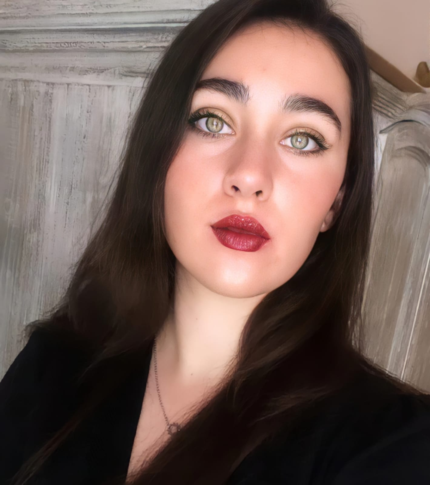

Soy egresada de la licenciatura en gestión y desarrollo de las artes de la Universidad La Salle Oaxaca.
Durante mi formación abordé temas en materia de historia del arte, sociología y antropología del arte, diversidad cultural, producción editorial, educación arte y cultura, empresas creativas y vinculación al arte y sociedad.